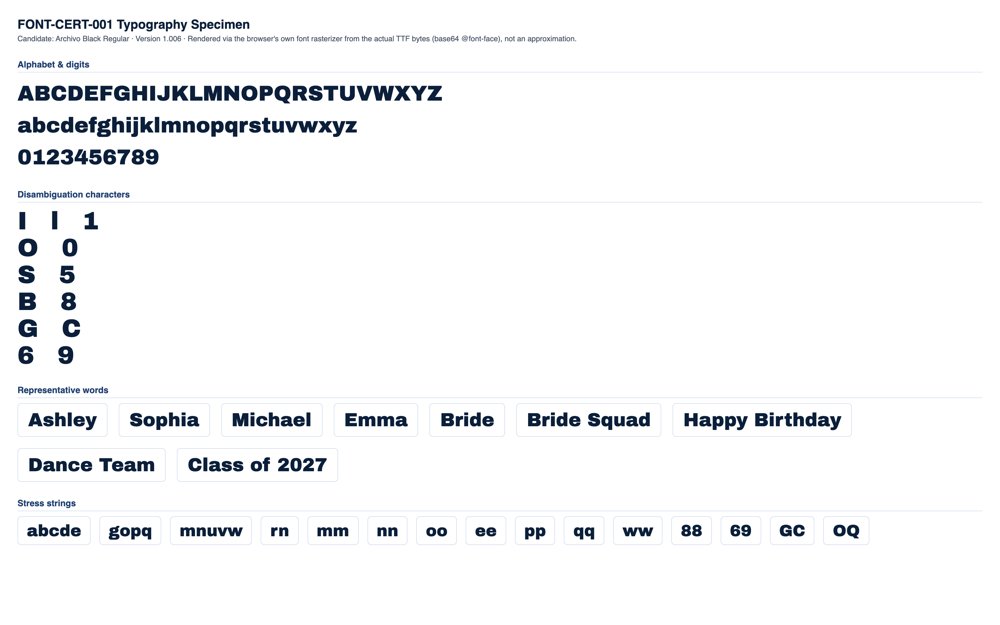

CONDITIONAL PASS
Classification and the feedback below are computed at the mid-range letter height for each stone size (the representative case). Full min/mid/max data is shown in section 4.
No blocking issues found.
Min and max height produce no more collisions or low-stone-count findings than mid height.
Medium
No blocking production failures, but 14 refinement note(s) were found (12 actionable item(s) below) -- readability, spacing, or anatomy concerns that would need addressing for production quality.
| Status | Check | Category | Detail |
|---|---|---|---|
| PASS | Successful TTF parsing | parsing | opentype.js parsed the file without error. |
| PASS | Outline format | structure | TrueType (quadratic) outlines. sfnt signature "0x00010000", opentype.js outlinesFormat="truetype". |
| PASS | Quadratic TrueType outlines | structure | TrueType file with quadratic curves confirmed: 60 curve commands found across 10 sampled glyphs. |
| PASS | unitsPerEm | structure | unitsPerEm = 1000 |
| PASS | Glyph count | structure | 426 glyphs (font.numGlyphs=426). |
| PASS | .notdef at glyph index 0 | structure | .notdef confirmed at glyph index 0. |
| PASS | Unicode cmap coverage | coverage | cmap maps 423 Unicode code point(s) to glyphs. |
| PASS | Required character coverage (A-Z, a-z, 0-9, space, . , ' - ! ?) | coverage | All 69 required characters map to a real glyph (glyph index != 0). |
| PASS | Required sfnt tables | structure | All required tables present: cmap, glyf, head, hhea, hmtx, loca, maxp, name, post, OS/2. |
| PASS | Family / subfamily / version / PostScript naming | naming | family="Archivo Black", subfamily="Regular", version="Version 1.006", postScriptName="ArchivoBlack-Regular". |
| PASS | Ascender, descender, line gap, horizontal metrics | metrics | ascender=878, descender=-210, hhea.lineGap=0, advanceWidthMax=1722, numberOfHMetrics=413 (hmtx table present: true). |
| PASS | Invalid or empty glyphs | geometry | No mapped, non-whitespace, non-invisible-by-design character resolves to an empty outline. |
| PASS | Open contours | geometry | Every required-character contour closes explicitly (an explicit "Z"/closepath command) or implicitly (its final point returns to its starting point). |
| PASS | Self-intersections | geometry | Strict transversal-crossing test (deduplicated, 16-segments-per-curve flattened outline, 69 required characters) found no self- or cross-contour crossings. |
| WARNING | Zero-length or duplicate outline segments | geometry | 42 of 69 character(s) contain 309 raw zero-length draw command(s) total (a command whose endpoint exactly duplicates the current pen position -- draws nothing, harmless no-op, but real source-file redundancy), 0 duplicate outline segments. Not production-blocking: these commands have no visual or geometric effect. Per-character counts: "B" (zero-length:8, duplicate:0), "C" (zero-length:8, duplicate:0), "D" (zero-length:4, duplicate:0), "G" (zero-length:8, duplicate:0), "J" (zero-length:4, duplicate:0), "M" (zero-length:2, duplicate:0), "O" (zero-length:8, duplicate:0), "P" (zero-length:4, duplicate:0), +34 more. |
| PASS | Coordinates outside valid TrueType ranges | geometry | All required-character outline coordinates fall within the signed 16-bit range (-32768 to 32767). |
| PASS | Inconsistent or suspicious advance widths / side bearings | metrics | Advance widths for required characters cluster reasonably around the median (667 units). |
Rendered from the actual source TTF via a base64-embedded @font-face rule (typography), and through the real production pipeline FontManager → OpenTypeProvider → GeometryEngine.generateTextLayout() → StoneLayout (rhinestone), at this milestone's own physical letter-height range per stone size:
| Stone size | Min | Mid (representative) | Max |
|---|---|---|---|
| SS6 | 35mm | 42.5mm | 50mm |
| SS10 | 45mm | 52.5mm | 60mm |
| SS16 | 65mm | 77.5mm | 90mm |
| SS20 | 80mm | 95mm | 110mm |
| SS30 | 106mm | 108.5mm | 111mm |


Successful layout generation (a non-empty StoneLayout with no collisions) is not the same as visual readability -- see each height variant's readability metrics below for objective, threshold-based findings.
| SS6 | text height: 35mm |
|---|---|
| SS10 | text height: 45mm |
| SS16 | text height: 65mm |
| SS20 | text height: 80mm |
| SS30 | text height: 106mm |
| Pair | Size | Stone counts | Chamfer distance | Result |
|---|---|---|---|---|
| "I" vs "l" | SS16 | 24 / 28 | 0.0276 | WARNING |
| "l" vs "1" | SS16 | 28 / 33 | 0.0539 | WARNING |
| "I" vs "1" | SS16 | 24 / 33 | 0.0483 | WARNING |
| "O" vs "0" | SS16 | 51 / 48 | 0.0598 | WARNING |
| "S" vs "5" | SS16 | 49 / 51 | 0.0439 | WARNING |
| "B" vs "8" | SS16 | 51 / 49 | 0.0617 | WARNING |
| "G" vs "C" | SS16 | 55 / 50 | 0.0416 | WARNING |
| "Q" vs "O" | SS16 | 55 / 51 | 0.0656 | WARNING |
| "e" vs "c" | SS16 | 41 / 40 | 0.0467 | WARNING |
| "e" vs "o" | SS16 | 41 / 40 | 0.0478 | WARNING |
| "c" vs "o" | SS16 | 40 / 40 | 0.0346 | WARNING |
| "6" vs "9" | SS16 | 49 / 50 | 0.0302 | WARNING |
Threshold: 0.09 (normalized, unit-height point clouds). Below threshold = flagged as visually similar.
| Char | SS6 | SS10 | SS16 | SS20 | SS30 |
|---|---|---|---|---|---|
| "A" | 43 | 40 | 40 | 44 | 43 |
| "B" | 54 | 50 | 51 | 56 | 52 |
| "C" | 50 | 49 | 50 | 53 | 52 |
| "D" | 50 | 49 | 48 | 51 | 51 |
| "E" | 52 | 50 | 51 | 54 | 51 |
| "F" | 39 | 38 | 38 | 41 | 41 |
| "G" | 58 | 57 | 55 | 60 | 56 |
| "H" | 50 | 44 | 48 | 49 | 49 |
| "I" | 24 | 23 | 24 | 26 | 25 |
| "J" | 33 | 31 | 33 | 35 | 36 |
| "K" | 52 | 46 | 45 | 52 | 52 |
| "L" | 34 | 32 | 33 | 36 | 34 |
| "M" | 66 | 59 | 64 | 70 | 63 |
| "N" | 49 | 50 | 49 | 52 | 51 |
| "O" | 51 | 50 | 51 | 54 | 54 |
| "P" | 39 | 39 | 39 | 41 | 41 |
| "Q" | 56 | 53 | 55 | 58 | 56 |
| "R" | 48 | 47 | 48 | 50 | 50 |
| "S" | 51 | 49 | 49 | 53 | 52 |
| "T" | 34 | 34 | 34 | 37 | 36 |
| "U" | 50 | 47 | 49 | 52 | 51 |
| "V" | 43 | 39 | 41 | 46 | 43 |
| "W" | 62 | 60 | 62 | 64 | 64 |
| "X" | 51 | 43 | 45 | 47 | 47 |
| "Y" | 39 | 35 | 38 | 37 | 37 |
| "Z" | 49 | 44 | 45 | 48 | 47 |
| "a" | 46 | 40 | 43 | 45 | 44 |
| "b" | 46 | 45 | 44 | 48 | 47 |
| "c" | 41 | 38 | 40 | 41 | 41 |
| "d" | 46 | 45 | 47 | 48 | 47 |
| "e" | 41 | 41 | 41 | 44 | 42 |
| "f" | 29 | 26 | 26 | 30 | 27 |
| "g" | 64 | 61 | 60 | 65 | 62 |
| "h" | 48 | 44 | 43 | 46 | 44 |
| "i" | 32 | 24 | 32 | 27 | 27 |
| "j" | 36 | 31 | 36 | 34 | 34 |
| "k" | 43 | 40 | 41 | 42 | 41 |
| "l" | 28 | 23 | 28 | 27 | 26 |
| "m" | 61 | 55 | 60 | 60 | 59 |
| "n" | 40 | 38 | 41 | 39 | 39 |
| "o" | 40 | 37 | 40 | 41 | 41 |
| "p" | 45 | 43 | 44 | 46 | 46 |
| "q" | 46 | 42 | 44 | 48 | 46 |
| "r" | 26 | 23 | 25 | 24 | 25 |
| "s" | 40 | 36 | 37 | 39 | 39 |
| "t" | 28 | 23 | 25 | 27 | 25 |
| "u" | 41 | 38 | 41 | 43 | 41 |
| "v" | 33 | 30 | 31 | 34 | 32 |
| "w" | 54 | 44 | 47 | 55 | 48 |
| "x" | 40 | 34 | 32 | 35 | 37 |
| "y" | 40 | 39 | 39 | 42 | 43 |
| "z" | 34 | 31 | 34 | 35 | 36 |
| "0" | 48 | 45 | 48 | 51 | 50 |
| "1" | 32 | 30 | 33 | 35 | 33 |
| "2" | 45 | 44 | 45 | 50 | 49 |
| "3" | 46 | 44 | 44 | 47 | 47 |
| "4" | 45 | 41 | 42 | 43 | 42 |
| "5" | 53 | 49 | 51 | 54 | 53 |
| "6" | 50 | 47 | 49 | 52 | 52 |
| "7" | 35 | 33 | 36 | 36 | 38 |
| "8" | 50 | 48 | 49 | 52 | 51 |
| "9" | 49 | 48 | 50 | 52 | 51 |
Cell values are stone count per glyph at that stone size ("coll." = colliding stone pairs found).
| Word | SS6 | SS10 | SS16 | SS20 | SS30 |
|---|---|---|---|---|---|
| Ashley | 240 stones, min spacing 2.00mm, 10 cluster(s) | 223 stones, min spacing 2.82mm, 12 cluster(s) | 228 stones, min spacing 4.02mm, 12 cluster(s) | 242 stones, min spacing 4.73mm, 13 cluster(s) | 237 stones, min spacing 6.47mm, 16 cluster(s) |
| Sophia | 262 stones, min spacing 2.00mm, 5 cluster(s) | 237 stones, min spacing 2.80mm, 6 cluster(s) | 251 stones, min spacing 4.01mm, 5 cluster(s) | 258 stones, min spacing 4.70mm, 13 cluster(s) | 254 stones, min spacing 6.45mm, 12 cluster(s) |
| Michael | 302 stones, min spacing 2.00mm, 7 cluster(s) | 269 stones, min spacing 2.80mm, 13 cluster(s) | 291 stones, min spacing 4.01mm, 6 cluster(s) | 300 stones, min spacing 4.80mm, 13 cluster(s) | 287 stones, min spacing 6.52mm, 18 cluster(s) |
| Emma | 220 stones, min spacing 2.03mm, 11 cluster(s) | 200 stones, min spacing 2.80mm, 12 cluster(s) | 214 stones, min spacing 4.01mm, 6 cluster(s) | 219 stones, min spacing 4.79mm, 12 cluster(s) | 213 stones, min spacing 6.54mm, 18 cluster(s) |
| Bride | 199 stones, min spacing 2.00mm, 4 cluster(s) | 183 stones, min spacing 2.81mm, 4 cluster(s) | 196 stones, min spacing 4.03mm, 3 cluster(s) | 199 stones, min spacing 4.70mm, 12 cluster(s) | 193 stones, min spacing 6.44mm, 12 cluster(s) |
| Bride Squad | 429 stones, min spacing 2.00mm, 9 cluster(s) | 397 stones, min spacing 2.80mm, 9 cluster(s) | 420 stones, min spacing 4.01mm, 6 cluster(s) | 436 stones, min spacing 4.70mm, 20 cluster(s) | 423 stones, min spacing 6.44mm, 20 cluster(s) |
| Happy Birthday | 543 stones, min spacing 2.00mm, 25 cluster(s) | 495 stones, min spacing 2.80mm, 28 cluster(s) | 522 stones, min spacing 4.01mm, 23 cluster(s) | 541 stones, min spacing 4.70mm, 29 cluster(s) | 532 stones, min spacing 6.44mm, 38 cluster(s) |
| Dance Team | 400 stones, min spacing 2.03mm, 11 cluster(s) | 376 stones, min spacing 2.80mm, 15 cluster(s) | 391 stones, min spacing 4.01mm, 9 cluster(s) | 406 stones, min spacing 4.77mm, 14 cluster(s) | 398 stones, min spacing 6.52mm, 16 cluster(s) |
| Class of 2027 | 445 stones, min spacing 2.03mm, 14 cluster(s) | 413 stones, min spacing 2.80mm, 17 cluster(s) | 435 stones, min spacing 4.01mm, 16 cluster(s) | 461 stones, min spacing 4.71mm, 15 cluster(s) | 453 stones, min spacing 6.41mm, 18 cluster(s) |
No glyph/size combination falls below the minimum meaningful stone count.
No counter-bearing glyph/size combination falls below the counter-bearing stone-count floor.
| Pair | Size | Chamfer distance | Stone counts |
|---|---|---|---|
| "I" vs "l" | SS6 | 0.0272 | 24 / 28 |
| "l" vs "1" | SS6 | 0.0579 | 28 / 32 |
| "I" vs "1" | SS6 | 0.0506 | 24 / 32 |
| "O" vs "0" | SS6 | 0.0597 | 51 / 48 |
| "S" vs "5" | SS6 | 0.0463 | 51 / 53 |
| "B" vs "8" | SS6 | 0.0641 | 54 / 50 |
| "G" vs "C" | SS6 | 0.0392 | 58 / 50 |
| "Q" vs "O" | SS6 | 0.0672 | 56 / 51 |
| "e" vs "c" | SS6 | 0.0469 | 41 / 41 |
| "e" vs "o" | SS6 | 0.0448 | 41 / 40 |
| "c" vs "o" | SS6 | 0.0368 | 41 / 40 |
| "6" vs "9" | SS6 | 0.0299 | 50 / 49 |
| "I" vs "l" | SS10 | 0.0277 | 23 / 23 |
| "l" vs "1" | SS10 | 0.0676 | 23 / 30 |
| "I" vs "1" | SS10 | 0.0657 | 23 / 30 |
| "O" vs "0" | SS10 | 0.0605 | 50 / 45 |
| "S" vs "5" | SS10 | 0.0428 | 49 / 49 |
| "B" vs "8" | SS10 | 0.0637 | 50 / 48 |
| "G" vs "C" | SS10 | 0.0393 | 57 / 49 |
| "Q" vs "O" | SS10 | 0.0630 | 53 / 50 |
| "e" vs "c" | SS10 | 0.0478 | 41 / 38 |
| "e" vs "o" | SS10 | 0.0238 | 41 / 37 |
| "c" vs "o" | SS10 | 0.0431 | 38 / 37 |
| "6" vs "9" | SS10 | 0.0398 | 47 / 48 |
| "I" vs "l" | SS16 | 0.0276 | 24 / 28 |
| "l" vs "1" | SS16 | 0.0539 | 28 / 33 |
| "I" vs "1" | SS16 | 0.0483 | 24 / 33 |
| "O" vs "0" | SS16 | 0.0598 | 51 / 48 |
| "S" vs "5" | SS16 | 0.0439 | 49 / 51 |
| "B" vs "8" | SS16 | 0.0617 | 51 / 49 |
| "G" vs "C" | SS16 | 0.0416 | 55 / 50 |
| "Q" vs "O" | SS16 | 0.0656 | 55 / 51 |
| "e" vs "c" | SS16 | 0.0467 | 41 / 40 |
| "e" vs "o" | SS16 | 0.0478 | 41 / 40 |
| "c" vs "o" | SS16 | 0.0346 | 40 / 40 |
| "6" vs "9" | SS16 | 0.0302 | 49 / 50 |
| "I" vs "l" | SS20 | 0.0259 | 26 / 27 |
| "l" vs "1" | SS20 | 0.0617 | 27 / 35 |
| "I" vs "1" | SS20 | 0.0581 | 26 / 35 |
| "O" vs "0" | SS20 | 0.0585 | 54 / 51 |
| "S" vs "5" | SS20 | 0.0430 | 53 / 54 |
| "B" vs "8" | SS20 | 0.0619 | 56 / 52 |
| "G" vs "C" | SS20 | 0.0355 | 60 / 53 |
| "Q" vs "O" | SS20 | 0.0649 | 58 / 54 |
| "e" vs "c" | SS20 | 0.0397 | 44 / 41 |
| "e" vs "o" | SS20 | 0.0341 | 44 / 41 |
| "c" vs "o" | SS20 | 0.0241 | 41 / 41 |
| "6" vs "9" | SS20 | 0.0347 | 52 / 52 |
| "I" vs "l" | SS30 | 0.0252 | 25 / 26 |
| "l" vs "1" | SS30 | 0.0632 | 26 / 33 |
| "I" vs "1" | SS30 | 0.0567 | 25 / 33 |
| "O" vs "0" | SS30 | 0.0588 | 54 / 50 |
| "S" vs "5" | SS30 | 0.0467 | 52 / 53 |
| "B" vs "8" | SS30 | 0.0637 | 52 / 51 |
| "G" vs "C" | SS30 | 0.0369 | 56 / 52 |
| "Q" vs "O" | SS30 | 0.0650 | 56 / 54 |
| "e" vs "c" | SS30 | 0.0423 | 42 / 41 |
| "e" vs "o" | SS30 | 0.0301 | 42 / 41 |
| "c" vs "o" | SS30 | 0.0273 | 41 / 41 |
| "6" vs "9" | SS30 | 0.0372 | 52 / 51 |
| Size | Diameter | Scale | Rendered stone size | Result |
|---|---|---|---|---|
| SS6 | 2mm | 5px/mm | 10px | PASS |
| SS10 | 2.8mm | 4px/mm | 11.2px | PASS |
| SS16 | 4mm | 3.5px/mm | 14px | PASS |
| SS20 | 4.7mm | 3px/mm | 14.1px | PASS |
| SS30 | 6.4mm | 2.5px/mm | 16px | PASS |
| SS6 | text height: 42.5mm |
|---|---|
| SS10 | text height: 52.5mm |
| SS16 | text height: 77.5mm |
| SS20 | text height: 95mm |
| SS30 | text height: 108.5mm |
| Pair | Size | Stone counts | Chamfer distance | Result |
|---|---|---|---|---|
| "I" vs "l" | SS16 | 30 / 30 | 0.0259 | WARNING |
| "l" vs "1" | SS16 | 30 / 39 | 0.0631 | WARNING |
| "I" vs "1" | SS16 | 30 / 39 | 0.0530 | WARNING |
| "O" vs "0" | SS16 | 62 / 57 | 0.0541 | WARNING |
| "S" vs "5" | SS16 | 62 / 60 | 0.0406 | WARNING |
| "B" vs "8" | SS16 | 63 / 59 | 0.0619 | WARNING |
| "G" vs "C" | SS16 | 69 / 60 | 0.0358 | WARNING |
| "Q" vs "O" | SS16 | 68 / 62 | 0.0633 | WARNING |
| "e" vs "c" | SS16 | 50 / 48 | 0.0306 | WARNING |
| "e" vs "o" | SS16 | 50 / 47 | 0.0254 | WARNING |
| "c" vs "o" | SS16 | 48 / 47 | 0.0244 | WARNING |
| "6" vs "9" | SS16 | 60 / 60 | 0.0358 | WARNING |
Threshold: 0.09 (normalized, unit-height point clouds). Below threshold = flagged as visually similar.
| Char | SS6 | SS10 | SS16 | SS20 | SS30 |
|---|---|---|---|---|---|
| "A" | 53 | 47 | 51 | 55 | 44 |
| "B" | 66 | 62 | 63 | 68 | 54 |
| "C" | 61 | 57 | 60 | 62 | 52 |
| "D" | 60 | 57 | 59 | 62 | 52 |
| "E" | 63 | 58 | 61 | 65 | 55 |
| "F" | 50 | 45 | 46 | 50 | 42 |
| "G" | 74 | 64 | 69 | 75 | 59 |
| "H" | 64 | 54 | 60 | 62 | 51 |
| "I" | 32 | 27 | 30 | 31 | 26 |
| "J" | 42 | 37 | 40 | 43 | 35 |
| "K" | 64 | 55 | 59 | 62 | 50 |
| "L" | 42 | 40 | 41 | 45 | 36 |
| "M" | 84 | 75 | 79 | 81 | 69 |
| "N" | 62 | 56 | 59 | 62 | 53 |
| "O" | 63 | 57 | 62 | 65 | 55 |
| "P" | 49 | 45 | 51 | 51 | 40 |
| "Q" | 68 | 63 | 68 | 69 | 58 |
| "R" | 60 | 55 | 57 | 62 | 51 |
| "S" | 68 | 60 | 62 | 66 | 53 |
| "T" | 44 | 40 | 43 | 45 | 37 |
| "U" | 62 | 56 | 59 | 62 | 53 |
| "V" | 52 | 47 | 50 | 53 | 44 |
| "W" | 82 | 72 | 76 | 82 | 66 |
| "X" | 61 | 52 | 56 | 59 | 48 |
| "Y" | 48 | 40 | 44 | 45 | 40 |
| "Z" | 57 | 54 | 55 | 60 | 48 |
| "a" | 56 | 50 | 56 | 57 | 45 |
| "b" | 58 | 51 | 55 | 57 | 47 |
| "c" | 48 | 45 | 48 | 50 | 42 |
| "d" | 57 | 51 | 54 | 57 | 48 |
| "e" | 53 | 47 | 50 | 54 | 44 |
| "f" | 36 | 30 | 32 | 36 | 28 |
| "g" | 80 | 71 | 78 | 81 | 66 |
| "h" | 57 | 50 | 56 | 57 | 47 |
| "i" | 33 | 30 | 33 | 33 | 28 |
| "j" | 43 | 38 | 41 | 43 | 34 |
| "k" | 55 | 48 | 48 | 54 | 42 |
| "l" | 32 | 29 | 30 | 32 | 27 |
| "m" | 72 | 68 | 70 | 74 | 62 |
| "n" | 48 | 44 | 47 | 48 | 41 |
| "o" | 48 | 44 | 47 | 50 | 41 |
| "p" | 55 | 51 | 54 | 56 | 47 |
| "q" | 56 | 51 | 53 | 56 | 48 |
| "r" | 30 | 26 | 28 | 28 | 26 |
| "s" | 50 | 43 | 46 | 50 | 41 |
| "t" | 34 | 30 | 33 | 34 | 29 |
| "u" | 49 | 44 | 49 | 50 | 43 |
| "v" | 41 | 35 | 38 | 42 | 33 |
| "w" | 64 | 56 | 61 | 66 | 52 |
| "x" | 48 | 42 | 41 | 44 | 37 |
| "y" | 51 | 46 | 50 | 50 | 43 |
| "z" | 42 | 39 | 40 | 44 | 35 |
| "0" | 59 | 54 | 57 | 60 | 51 |
| "1" | 44 | 38 | 39 | 43 | 35 |
| "2" | 60 | 53 | 56 | 58 | 48 |
| "3" | 56 | 53 | 56 | 57 | 48 |
| "4" | 54 | 50 | 49 | 55 | 45 |
| "5" | 68 | 57 | 60 | 64 | 55 |
| "6" | 64 | 56 | 60 | 63 | 53 |
| "7" | 44 | 40 | 43 | 44 | 37 |
| "8" | 61 | 56 | 59 | 62 | 53 |
| "9" | 62 | 57 | 60 | 65 | 54 |
Cell values are stone count per glyph at that stone size ("coll." = colliding stone pairs found).
| Word | SS6 | SS10 | SS16 | SS20 | SS30 |
|---|---|---|---|---|---|
| Ashley | 296 stones, min spacing 2.02mm, 15 cluster(s) | 262 stones, min spacing 2.80mm, 18 cluster(s) | 283 stones, min spacing 4.00mm, 14 cluster(s) | 298 stones, min spacing 4.70mm, 16 cluster(s) | 246 stones, min spacing 6.41mm, 14 cluster(s) |
| Sophia | 317 stones, min spacing 2.06mm, 16 cluster(s) | 285 stones, min spacing 2.80mm, 14 cluster(s) | 308 stones, min spacing 4.05mm, 8 cluster(s) | 319 stones, min spacing 4.73mm, 12 cluster(s) | 261 stones, min spacing 6.43mm, 8 cluster(s) |
| Michael | 363 stones, min spacing 2.05mm, 18 cluster(s) | 326 stones, min spacing 2.81mm, 17 cluster(s) | 352 stones, min spacing 4.00mm, 13 cluster(s) | 364 stones, min spacing 4.73mm, 15 cluster(s) | 302 stones, min spacing 6.43mm, 13 cluster(s) |
| Emma | 263 stones, min spacing 2.06mm, 16 cluster(s) | 244 stones, min spacing 2.85mm, 13 cluster(s) | 257 stones, min spacing 4.02mm, 15 cluster(s) | 270 stones, min spacing 4.73mm, 14 cluster(s) | 224 stones, min spacing 6.41mm, 9 cluster(s) |
| Bride | 239 stones, min spacing 2.00mm, 13 cluster(s) | 216 stones, min spacing 2.85mm, 12 cluster(s) | 228 stones, min spacing 4.05mm, 14 cluster(s) | 240 stones, min spacing 4.71mm, 13 cluster(s) | 200 stones, min spacing 6.46mm, 12 cluster(s) |
| Bride Squad | 525 stones, min spacing 2.00mm, 26 cluster(s) | 472 stones, min spacing 2.80mm, 24 cluster(s) | 502 stones, min spacing 4.04mm, 20 cluster(s) | 526 stones, min spacing 4.71mm, 26 cluster(s) | 437 stones, min spacing 6.40mm, 20 cluster(s) |
| Happy Birthday | 663 stones, min spacing 2.00mm, 45 cluster(s) | 595 stones, min spacing 2.80mm, 45 cluster(s) | 646 stones, min spacing 4.02mm, 32 cluster(s) | 663 stones, min spacing 4.70mm, 39 cluster(s) | 551 stones, min spacing 6.41mm, 27 cluster(s) |
| Dance Team | 490 stones, min spacing 2.06mm, 21 cluster(s) | 448 stones, min spacing 2.85mm, 17 cluster(s) | 479 stones, min spacing 4.03mm, 16 cluster(s) | 501 stones, min spacing 4.73mm, 23 cluster(s) | 412 stones, min spacing 6.44mm, 9 cluster(s) |
| Class of 2027 | 556 stones, min spacing 2.01mm, 19 cluster(s) | 496 stones, min spacing 2.82mm, 22 cluster(s) | 529 stones, min spacing 4.01mm, 21 cluster(s) | 556 stones, min spacing 4.72mm, 21 cluster(s) | 459 stones, min spacing 6.44mm, 26 cluster(s) |
No glyph/size combination falls below the minimum meaningful stone count.
No counter-bearing glyph/size combination falls below the counter-bearing stone-count floor.
| Pair | Size | Chamfer distance | Stone counts |
|---|---|---|---|
| "I" vs "l" | SS6 | 0.0272 | 32 / 32 |
| "l" vs "1" | SS6 | 0.0659 | 32 / 44 |
| "I" vs "1" | SS6 | 0.0634 | 32 / 44 |
| "O" vs "0" | SS6 | 0.0545 | 63 / 59 |
| "S" vs "5" | SS6 | 0.0386 | 68 / 68 |
| "B" vs "8" | SS6 | 0.0592 | 66 / 61 |
| "G" vs "C" | SS6 | 0.0357 | 74 / 61 |
| "Q" vs "O" | SS6 | 0.0625 | 68 / 63 |
| "e" vs "c" | SS6 | 0.0298 | 53 / 48 |
| "e" vs "o" | SS6 | 0.0431 | 53 / 48 |
| "c" vs "o" | SS6 | 0.0381 | 48 / 48 |
| "6" vs "9" | SS6 | 0.0328 | 64 / 62 |
| "I" vs "l" | SS10 | 0.0259 | 27 / 29 |
| "l" vs "1" | SS10 | 0.0607 | 29 / 38 |
| "I" vs "1" | SS10 | 0.0562 | 27 / 38 |
| "O" vs "0" | SS10 | 0.0565 | 57 / 54 |
| "S" vs "5" | SS10 | 0.0428 | 60 / 57 |
| "B" vs "8" | SS10 | 0.0610 | 62 / 56 |
| "G" vs "C" | SS10 | 0.0380 | 64 / 57 |
| "Q" vs "O" | SS10 | 0.0644 | 63 / 57 |
| "e" vs "c" | SS10 | 0.0339 | 47 / 45 |
| "e" vs "o" | SS10 | 0.0295 | 47 / 44 |
| "c" vs "o" | SS10 | 0.0197 | 45 / 44 |
| "6" vs "9" | SS10 | 0.0385 | 56 / 57 |
| "I" vs "l" | SS16 | 0.0259 | 30 / 30 |
| "l" vs "1" | SS16 | 0.0631 | 30 / 39 |
| "I" vs "1" | SS16 | 0.0530 | 30 / 39 |
| "O" vs "0" | SS16 | 0.0541 | 62 / 57 |
| "S" vs "5" | SS16 | 0.0406 | 62 / 60 |
| "B" vs "8" | SS16 | 0.0619 | 63 / 59 |
| "G" vs "C" | SS16 | 0.0358 | 69 / 60 |
| "Q" vs "O" | SS16 | 0.0633 | 68 / 62 |
| "e" vs "c" | SS16 | 0.0306 | 50 / 48 |
| "e" vs "o" | SS16 | 0.0254 | 50 / 47 |
| "c" vs "o" | SS16 | 0.0244 | 48 / 47 |
| "6" vs "9" | SS16 | 0.0358 | 60 / 60 |
| "I" vs "l" | SS20 | 0.0263 | 31 / 32 |
| "l" vs "1" | SS20 | 0.0622 | 32 / 43 |
| "I" vs "1" | SS20 | 0.0568 | 31 / 43 |
| "O" vs "0" | SS20 | 0.0553 | 65 / 60 |
| "S" vs "5" | SS20 | 0.0409 | 66 / 64 |
| "B" vs "8" | SS20 | 0.0578 | 68 / 62 |
| "G" vs "C" | SS20 | 0.0357 | 75 / 62 |
| "Q" vs "O" | SS20 | 0.0625 | 69 / 65 |
| "e" vs "c" | SS20 | 0.0307 | 54 / 50 |
| "e" vs "o" | SS20 | 0.0246 | 54 / 50 |
| "c" vs "o" | SS20 | 0.0288 | 50 / 50 |
| "6" vs "9" | SS20 | 0.0339 | 63 / 65 |
| "I" vs "l" | SS30 | 0.0251 | 26 / 27 |
| "l" vs "1" | SS30 | 0.0617 | 27 / 35 |
| "I" vs "1" | SS30 | 0.0597 | 26 / 35 |
| "O" vs "0" | SS30 | 0.0578 | 55 / 51 |
| "S" vs "5" | SS30 | 0.0434 | 53 / 55 |
| "B" vs "8" | SS30 | 0.0628 | 54 / 53 |
| "G" vs "C" | SS30 | 0.0377 | 59 / 52 |
| "Q" vs "O" | SS30 | 0.0635 | 58 / 55 |
| "e" vs "c" | SS30 | 0.0406 | 44 / 42 |
| "e" vs "o" | SS30 | 0.0435 | 44 / 41 |
| "c" vs "o" | SS30 | 0.0379 | 42 / 41 |
| "6" vs "9" | SS30 | 0.0322 | 53 / 54 |
| Size | Diameter | Scale | Rendered stone size | Result |
|---|---|---|---|---|
| SS6 | 2mm | 5px/mm | 10px | PASS |
| SS10 | 2.8mm | 4px/mm | 11.2px | PASS |
| SS16 | 4mm | 3.5px/mm | 14px | PASS |
| SS20 | 4.7mm | 3px/mm | 14.1px | PASS |
| SS30 | 6.4mm | 2.5px/mm | 16px | PASS |
| SS6 | text height: 50mm |
|---|---|
| SS10 | text height: 60mm |
| SS16 | text height: 90mm |
| SS20 | text height: 110mm |
| SS30 | text height: 111mm |
| Pair | Size | Stone counts | Chamfer distance | Result |
|---|---|---|---|---|
| "I" vs "l" | SS16 | 36 / 35 | 0.0256 | WARNING |
| "l" vs "1" | SS16 | 35 / 48 | 0.0598 | WARNING |
| "I" vs "1" | SS16 | 36 / 48 | 0.0577 | WARNING |
| "O" vs "0" | SS16 | 72 / 66 | 0.0569 | WARNING |
| "S" vs "5" | SS16 | 75 / 71 | 0.0404 | WARNING |
| "B" vs "8" | SS16 | 76 / 69 | 0.0599 | WARNING |
| "G" vs "C" | SS16 | 82 / 70 | 0.0359 | WARNING |
| "Q" vs "O" | SS16 | 78 / 72 | 0.0612 | WARNING |
| "e" vs "c" | SS16 | 59 / 55 | 0.0342 | WARNING |
| "e" vs "o" | SS16 | 59 / 54 | 0.0312 | WARNING |
| "c" vs "o" | SS16 | 55 / 54 | 0.0210 | WARNING |
| "6" vs "9" | SS16 | 71 / 71 | 0.0311 | WARNING |
Threshold: 0.09 (normalized, unit-height point clouds). Below threshold = flagged as visually similar.
| Char | SS6 | SS10 | SS16 | SS20 | SS30 |
|---|---|---|---|---|---|
| "A" | 63 | 55 | 62 | 63 | 45 |
| "B" | 77 | 69 | 76 | 79 | 57 |
| "C" | 74 | 66 | 70 | 73 | 54 |
| "D" | 71 | 66 | 68 | 72 | 54 |
| "E" | 79 | 67 | 74 | 78 | 58 |
| "F" | 60 | 53 | 58 | 60 | 42 |
| "G" | 87 | 75 | 82 | 87 | 62 |
| "H" | 73 | 65 | 67 | 74 | 54 |
| "I" | 36 | 32 | 36 | 38 | 27 |
| "J" | 51 | 45 | 47 | 50 | 36 |
| "K" | 74 | 65 | 69 | 74 | 52 |
| "L" | 52 | 43 | 48 | 52 | 36 |
| "M" | 100 | 84 | 92 | 100 | 70 |
| "N" | 75 | 67 | 71 | 72 | 54 |
| "O" | 75 | 66 | 72 | 75 | 56 |
| "P" | 62 | 52 | 57 | 59 | 43 |
| "Q" | 82 | 72 | 78 | 82 | 60 |
| "R" | 75 | 64 | 71 | 73 | 53 |
| "S" | 78 | 69 | 75 | 78 | 55 |
| "T" | 56 | 45 | 50 | 54 | 39 |
| "U" | 75 | 64 | 71 | 74 | 54 |
| "V" | 62 | 55 | 58 | 62 | 47 |
| "W" | 98 | 83 | 93 | 95 | 70 |
| "X" | 73 | 58 | 66 | 69 | 48 |
| "Y" | 54 | 47 | 51 | 55 | 40 |
| "Z" | 70 | 62 | 65 | 70 | 50 |
| "a" | 68 | 58 | 61 | 65 | 46 |
| "b" | 67 | 57 | 63 | 68 | 49 |
| "c" | 59 | 52 | 55 | 58 | 44 |
| "d" | 67 | 60 | 65 | 66 | 49 |
| "e" | 63 | 55 | 59 | 62 | 45 |
| "f" | 40 | 38 | 39 | 41 | 29 |
| "g" | 94 | 83 | 90 | 94 | 67 |
| "h" | 66 | 58 | 63 | 67 | 48 |
| "i" | 40 | 37 | 39 | 41 | 30 |
| "j" | 52 | 44 | 49 | 52 | 37 |
| "k" | 65 | 57 | 60 | 61 | 46 |
| "l" | 38 | 32 | 35 | 37 | 27 |
| "m" | 86 | 76 | 83 | 86 | 62 |
| "n" | 56 | 49 | 54 | 57 | 42 |
| "o" | 57 | 50 | 54 | 57 | 43 |
| "p" | 66 | 55 | 64 | 65 | 48 |
| "q" | 66 | 56 | 64 | 66 | 48 |
| "r" | 36 | 33 | 32 | 37 | 26 |
| "s" | 61 | 51 | 57 | 61 | 42 |
| "t" | 42 | 36 | 39 | 39 | 29 |
| "u" | 57 | 51 | 55 | 58 | 42 |
| "v" | 47 | 43 | 44 | 49 | 34 |
| "w" | 77 | 66 | 74 | 77 | 51 |
| "x" | 58 | 47 | 53 | 53 | 38 |
| "y" | 61 | 54 | 58 | 59 | 44 |
| "z" | 51 | 44 | 49 | 52 | 36 |
| "0" | 69 | 62 | 66 | 70 | 53 |
| "1" | 51 | 47 | 48 | 49 | 36 |
| "2" | 70 | 61 | 65 | 70 | 49 |
| "3" | 68 | 59 | 66 | 68 | 49 |
| "4" | 65 | 54 | 59 | 62 | 44 |
| "5" | 76 | 67 | 71 | 75 | 56 |
| "6" | 74 | 65 | 71 | 76 | 55 |
| "7" | 51 | 45 | 50 | 51 | 39 |
| "8" | 73 | 63 | 69 | 73 | 54 |
| "9" | 76 | 65 | 71 | 73 | 54 |
Cell values are stone count per glyph at that stone size ("coll." = colliding stone pairs found).
| Word | SS6 | SS10 | SS16 | SS20 | SS30 |
|---|---|---|---|---|---|
| Ashley | 352 stones, min spacing 2.02mm, 18 cluster(s) | 305 stones, min spacing 2.83mm, 15 cluster(s) | 334 stones, min spacing 4.01mm, 18 cluster(s) | 349 stones, min spacing 4.71mm, 19 cluster(s) | 251 stones, min spacing 6.41mm, 17 cluster(s) |
| Sophia | 375 stones, min spacing 2.02mm, 13 cluster(s) | 327 stones, min spacing 2.83mm, 17 cluster(s) | 356 stones, min spacing 4.01mm, 17 cluster(s) | 373 stones, min spacing 4.71mm, 22 cluster(s) | 270 stones, min spacing 6.41mm, 11 cluster(s) |
| Michael | 434 stones, min spacing 2.02mm, 17 cluster(s) | 376 stones, min spacing 2.83mm, 16 cluster(s) | 404 stones, min spacing 4.03mm, 23 cluster(s) | 430 stones, min spacing 4.71mm, 26 cluster(s) | 310 stones, min spacing 6.41mm, 14 cluster(s) |
| Emma | 319 stones, min spacing 2.07mm, 12 cluster(s) | 277 stones, min spacing 2.83mm, 14 cluster(s) | 301 stones, min spacing 4.02mm, 18 cluster(s) | 315 stones, min spacing 4.75mm, 19 cluster(s) | 228 stones, min spacing 6.42mm, 17 cluster(s) |
| Bride | 283 stones, min spacing 2.02mm, 15 cluster(s) | 254 stones, min spacing 2.80mm, 10 cluster(s) | 271 stones, min spacing 4.00mm, 13 cluster(s) | 285 stones, min spacing 4.81mm, 18 cluster(s) | 207 stones, min spacing 6.41mm, 12 cluster(s) |
| Bride Squad | 619 stones, min spacing 2.00mm, 27 cluster(s) | 548 stones, min spacing 2.80mm, 25 cluster(s) | 591 stones, min spacing 4.00mm, 29 cluster(s) | 618 stones, min spacing 4.74mm, 35 cluster(s) | 447 stones, min spacing 6.41mm, 21 cluster(s) |
| Happy Birthday | 789 stones, min spacing 2.02mm, 37 cluster(s) | 690 stones, min spacing 2.80mm, 44 cluster(s) | 745 stones, min spacing 4.00mm, 46 cluster(s) | 780 stones, min spacing 4.70mm, 50 cluster(s) | 566 stones, min spacing 6.41mm, 43 cluster(s) |
| Dance Team | 590 stones, min spacing 2.02mm, 21 cluster(s) | 514 stones, min spacing 2.83mm, 23 cluster(s) | 550 stones, min spacing 4.02mm, 28 cluster(s) | 581 stones, min spacing 4.76mm, 31 cluster(s) | 423 stones, min spacing 6.41mm, 15 cluster(s) |
| Class of 2027 | 659 stones, min spacing 2.01mm, 23 cluster(s) | 575 stones, min spacing 2.83mm, 21 cluster(s) | 619 stones, min spacing 4.01mm, 29 cluster(s) | 656 stones, min spacing 4.72mm, 25 cluster(s) | 473 stones, min spacing 6.42mm, 17 cluster(s) |
No glyph/size combination falls below the minimum meaningful stone count.
No counter-bearing glyph/size combination falls below the counter-bearing stone-count floor.
| Pair | Size | Chamfer distance | Stone counts |
|---|---|---|---|
| "I" vs "l" | SS6 | 0.0248 | 36 / 38 |
| "l" vs "1" | SS6 | 0.0607 | 38 / 51 |
| "I" vs "1" | SS6 | 0.0563 | 36 / 51 |
| "O" vs "0" | SS6 | 0.0566 | 75 / 69 |
| "S" vs "5" | SS6 | 0.0395 | 78 / 76 |
| "B" vs "8" | SS6 | 0.0578 | 77 / 73 |
| "G" vs "C" | SS6 | 0.0356 | 87 / 74 |
| "Q" vs "O" | SS6 | 0.0609 | 82 / 75 |
| "e" vs "c" | SS6 | 0.0363 | 63 / 59 |
| "e" vs "o" | SS6 | 0.0379 | 63 / 57 |
| "c" vs "o" | SS6 | 0.0302 | 59 / 57 |
| "6" vs "9" | SS6 | 0.0341 | 74 / 76 |
| "I" vs "l" | SS10 | 0.0261 | 32 / 32 |
| "l" vs "1" | SS10 | 0.0611 | 32 / 47 |
| "I" vs "1" | SS10 | 0.0571 | 32 / 47 |
| "O" vs "0" | SS10 | 0.0556 | 66 / 62 |
| "S" vs "5" | SS10 | 0.0426 | 69 / 67 |
| "B" vs "8" | SS10 | 0.0583 | 69 / 63 |
| "G" vs "C" | SS10 | 0.0354 | 75 / 66 |
| "Q" vs "O" | SS10 | 0.0633 | 72 / 66 |
| "e" vs "c" | SS10 | 0.0293 | 55 / 52 |
| "e" vs "o" | SS10 | 0.0317 | 55 / 50 |
| "c" vs "o" | SS10 | 0.0364 | 52 / 50 |
| "6" vs "9" | SS10 | 0.0354 | 65 / 65 |
| "I" vs "l" | SS16 | 0.0256 | 36 / 35 |
| "l" vs "1" | SS16 | 0.0598 | 35 / 48 |
| "I" vs "1" | SS16 | 0.0577 | 36 / 48 |
| "O" vs "0" | SS16 | 0.0569 | 72 / 66 |
| "S" vs "5" | SS16 | 0.0404 | 75 / 71 |
| "B" vs "8" | SS16 | 0.0599 | 76 / 69 |
| "G" vs "C" | SS16 | 0.0359 | 82 / 70 |
| "Q" vs "O" | SS16 | 0.0612 | 78 / 72 |
| "e" vs "c" | SS16 | 0.0342 | 59 / 55 |
| "e" vs "o" | SS16 | 0.0312 | 59 / 54 |
| "c" vs "o" | SS16 | 0.0210 | 55 / 54 |
| "6" vs "9" | SS16 | 0.0311 | 71 / 71 |
| "I" vs "l" | SS20 | 0.0257 | 38 / 37 |
| "l" vs "1" | SS20 | 0.0578 | 37 / 49 |
| "I" vs "1" | SS20 | 0.0527 | 38 / 49 |
| "O" vs "0" | SS20 | 0.0567 | 75 / 70 |
| "S" vs "5" | SS20 | 0.0384 | 78 / 75 |
| "B" vs "8" | SS20 | 0.0582 | 79 / 73 |
| "G" vs "C" | SS20 | 0.0344 | 87 / 73 |
| "Q" vs "O" | SS20 | 0.0609 | 82 / 75 |
| "e" vs "c" | SS20 | 0.0357 | 62 / 58 |
| "e" vs "o" | SS20 | 0.0338 | 62 / 57 |
| "c" vs "o" | SS20 | 0.0203 | 58 / 57 |
| "6" vs "9" | SS20 | 0.0302 | 76 / 73 |
| "I" vs "l" | SS30 | 0.0254 | 27 / 27 |
| "l" vs "1" | SS30 | 0.0559 | 27 / 36 |
| "I" vs "1" | SS30 | 0.0626 | 27 / 36 |
| "O" vs "0" | SS30 | 0.0572 | 56 / 53 |
| "S" vs "5" | SS30 | 0.0407 | 55 / 56 |
| "B" vs "8" | SS30 | 0.0640 | 57 / 54 |
| "G" vs "C" | SS30 | 0.0379 | 62 / 54 |
| "Q" vs "O" | SS30 | 0.0639 | 60 / 56 |
| "e" vs "c" | SS30 | 0.0414 | 45 / 44 |
| "e" vs "o" | SS30 | 0.0312 | 45 / 43 |
| "c" vs "o" | SS30 | 0.0450 | 44 / 43 |
| "6" vs "9" | SS30 | 0.0336 | 55 / 54 |
| Size | Diameter | Scale | Rendered stone size | Result |
|---|---|---|---|---|
| SS6 | 2mm | 5px/mm | 10px | PASS |
| SS10 | 2.8mm | 4px/mm | 11.2px | PASS |
| SS16 | 4mm | 3.5px/mm | 14px | PASS |
| SS20 | 4.7mm | 3px/mm | 14.1px | PASS |
| SS30 | 6.4mm | 2.5px/mm | 16px | PASS |
x-height measured spread: 13.0 font units across 13 letters (declared OS/2 sxHeight: 528). Cap-height measured spread: 12.0 font units across 26 letters (declared OS/2 sCapHeight: 688).
No visual-weight outliers found across a-z.
No baseline anomalies found across a-z.
All 5 tested word-space boundaries measure at least 1.3× the median intra-word letter gap (tightest: "Dance Team" between "e" and "T" at 4.26×) -- no word-space is flagged as reading like an ordinary letter gap.
| File size | 88.9 KB |
|---|---|
| sfnt signature | 0x00010000 |
| Outline format | truetype |
| unitsPerEm | 1000 |
| Glyph count | 426 |
| cmap entries | 423 |
| Tables present | DSIG, GDEF, GPOS, GSUB, OS/2, cmap, cvt, fpgm, gasp, glyf, head, hhea, hmtx, loca, maxp, name, post, prep |
| Family / Subfamily | Archivo Black / Regular |
| Version | Version 1.006 |
| PostScript name | ArchivoBlack-Regular |
| Ascender / Descender | 878 / -210 |
| Line gap | 0 |
| sxHeight / sCapHeight | 528 / 688 |
| Italic angle | 0 |
| Fixed pitch | no |
| Curve vs line commands (sample) | 60 curve / 118 line (10 glyphs) |